Manual de uso - Dalfi Studio Nail & Academy ERP
1. Dashboard
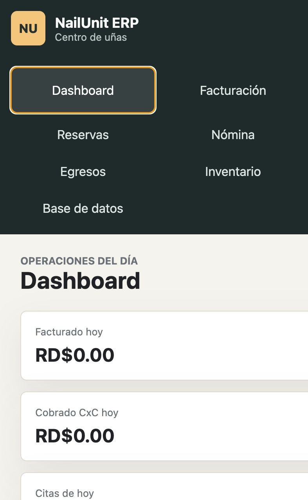
El Dashboard muestra la operación del día: facturación, cobros de cuentas por cobrar, citas y caja estimada.
- Entrar al menú Dashboard.
- Revisar las tarjetas superiores.
- Consultar facturación, CxC cobradas y citas del día.
2. Facturación
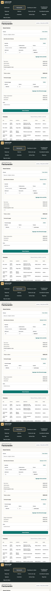
Permite registrar servicios, colaboradoras, adicionales, descuentos, propinas y pagos mixtos.
- Seleccionar o crear cliente.
- Agregar uno o varios servicios.
- Seleccionar colaboradora por cada servicio.
- Agregar propina, adicional o descuento si aplica.
- Agregar una o varias formas de pago.
- Confirmar que el total esté cubierto y crear factura.
3. Cuentas por cobrar
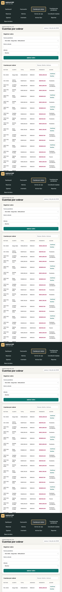
Controla créditos, transferencias pendientes y balances de facturas no saldadas.
- Seleccionar factura pendiente.
- Indicar monto cobrado.
- Seleccionar método.
- Aplicar cobro.
4. Transferencias pendientes
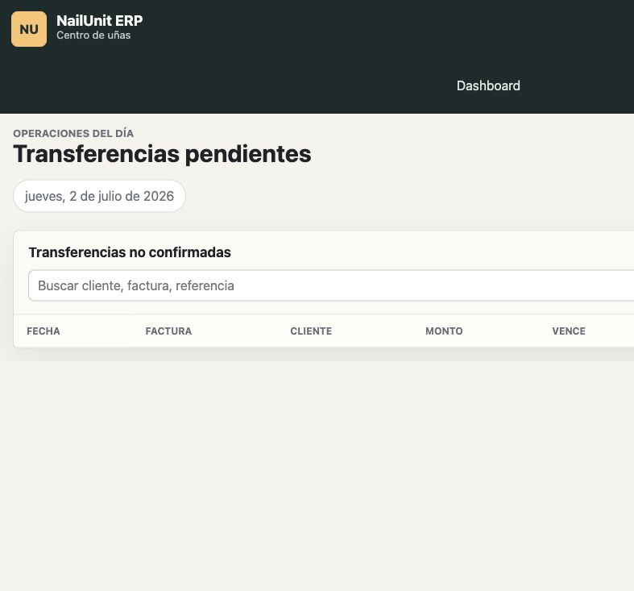
Gestiona las transferencias no confirmadas sin mezclarlas con ingresos reales.
- Confirmar: registra el ingreso y salda la cuenta.
- Declinar: convierte la transferencia en deuda vencida inmediata.
5. Reservas
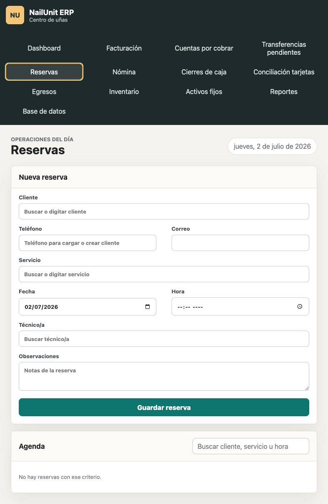
Registra citas por cliente, servicio, fecha, hora y colaboradora. También permite facturar desde una reserva.
- Completar cliente o teléfono.
- Seleccionar servicio, fecha, hora y técnico/a.
- Guardar reserva.
- Usar Facturar para llevar la reserva al módulo de facturación.
6. Nómina
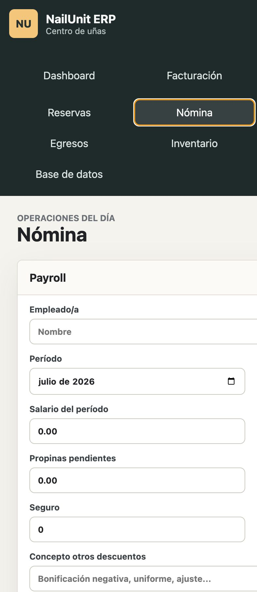
Calcula payroll por período, con salario, comisiones, propinas, descuentos y CxC del colaborador.
- Seleccionar colaboradora.
- Seleccionar período y corte.
- Revisar salario, comisión y propina.
- Agregar descuentos.
- Generar payroll y cuenta por pagar.
7. Cierres de caja
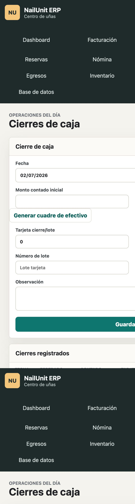
Compara efectivo esperado contra efectivo contado y documenta faltantes o sobrantes.
- Indicar fecha y monto contado.
- Presionar Generar cuadre de efectivo.
- Documentar faltante si existe.
- Registrar tarjeta, lote y transferencias confirmadas.
- Guardar cierre.
8. Conciliación tarjetas
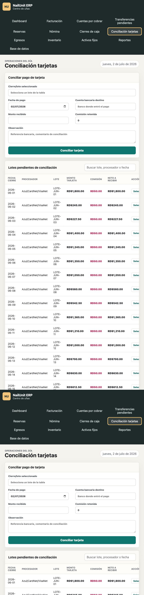
Permite conciliar lotes de tarjeta contra depósitos reales del adquirente.
- Seleccionar lote pendiente.
- Indicar fecha de pago y cuenta bancaria.
- Revisar monto recibido y comisión.
- Conciliar tarjeta.
9. Egresos
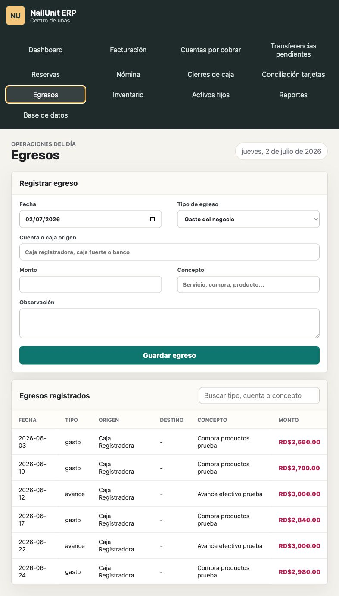
Registra gastos, costos, inversiones, transferencias internas y avances autorizados.
- Seleccionar fecha y tipo.
- Seleccionar cuenta origen.
- Revisar disponible.
- Indicar monto, concepto y observación.
- Guardar egreso.
10. Inventario
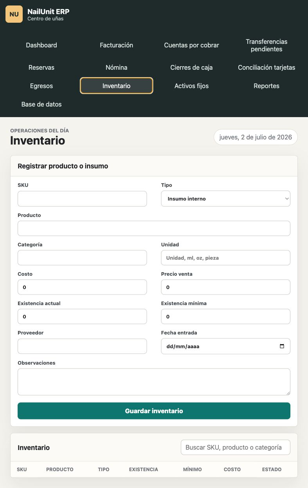
Registra insumos internos, productos de venta, productos usados en servicios, herramientas y otros artículos.
- Completar SKU, tipo y nombre.
- Indicar costo, precio, existencia y mínimo.
- Seleccionar proveedor y fecha de entrada.
- Guardar inventario.
11. Activos fijos
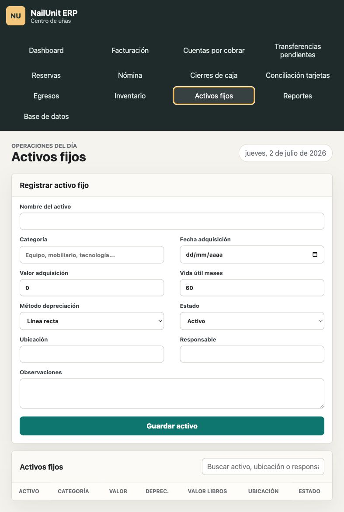
Registra equipos, mobiliario, herramientas y otros activos del negocio con depreciación y valor en libros.
- Completar nombre, categoría y fecha de adquisición.
- Indicar valor y vida útil.
- Seleccionar estado, ubicación y responsable.
- Guardar activo.
12. Reportes
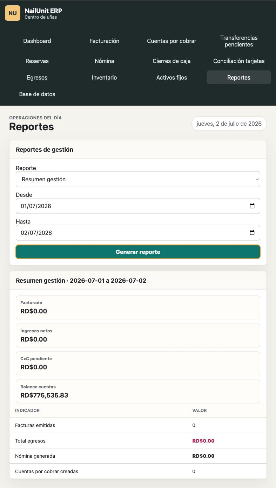
Genera reportes financieros y operativos por período.
- Seleccionar reporte.
- Indicar fecha desde y hasta.
- Completar filtros opcionales.
- Presionar Generar reporte.
13. Base de datos
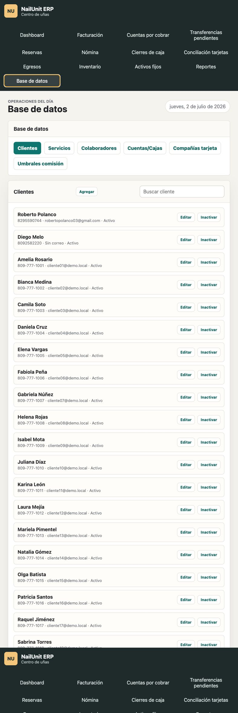
Administra catálogos del sistema: clientes, servicios, colaboradoras, cuentas/cajas, compañías de tarjeta y umbrales.
- Seleccionar catálogo.
- Agregar, editar o inactivar registros.
- Usar inactivación para conservar historial.
14. Guiones sugeridos para videos
Facturación completa
Crear cliente, agregar servicios, propina, pagos mixtos y crear factura.
Transferencia pendiente
Crear factura con transferencia pendiente, confirmar y declinar desde el módulo correspondiente.
Tarjeta y conciliación
Facturar con tarjeta, registrar cierre con lote y conciliar contra banco.
Crédito y cobro posterior
Crear factura a crédito, cobrar desde CxC y revisar saldo.
Nómina
Seleccionar colaboradora, período, corte, descuentos y generar payroll.
Cierre de caja
Generar cuadre, documentar faltante y guardar cierre.
Reportes
Generar balance de cuentas, facturación por colaboradora y CxC.